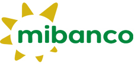
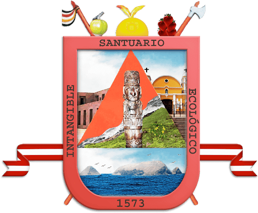
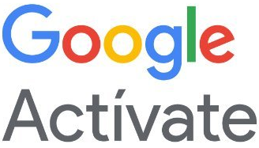
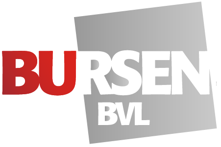

eadtta95@gmail.com eadtta95@outlook.es
+51 954874823
Lima - Perú
https://eduardowins.github.io/eduardodiaztolentino/
https://join.skype.com/invite/zwJRAfyOSguN
https://www.linkedin.com/in/eduardodiaztolentino/
• Responsabilidad en el trabajo.
• Capacidad de trabajar en equipo.
• Autonomía y proactividad.
• Relación interpersonal.
• Iniciativa e innovación.
• Flexibilidad y capacidad de adaptación.
Arturo Coral - CEO
999110522
Hero Startup
Ing. Jorge Alberto Rojas Sifuentes
Jefe de escuela de Administración Industrial
5149700 – 17059 / 922399835
Senati
Coordinación Académica
01 - 2020900
 Certus
Certus
Tecnóloga Medica Fanny Quincha Felles
Gerente
967908878
Centro de Medicina Física y Rehabilitación Angelitos de Jesús S.A.C.
Lic. Lincoln Quispe
Coordinador académico
01 - 2441414 Anexo: 221
Instituto Superior Tecnológico San Pablo
Edwin Roca
Gerente de agencia
993551964
Interbank
Edwin Roca
Gerente de agencia
993551964
Mi Banco
Ministerio de Educación de Ecuador
Participación como Mentor para el programa de capacitación de docentes digitales dirigido a docentes que laboran en la educación estatal de Ecuador.
MINEDUC
Setiembre 2020
Hero Startup
Participación como Mentor para el programa de capacitación de docentes digitales dirigido a docentes que laboran en la educación estatal de Perú - MINEDU.
Julio 2020
Certus
Profesor y mentor del equipo TUTEC que obtuvo el segundo puesto en el Programa de Emprendimientos para ser apoyados por la incubadora de la universidad Católica.
Noviembre 2019
Instituto Superior Tecnológico San Pablo
Participación en calidad de organizador y preparación del primer taller realizado por los alumnos de Administración V ciclo, siendo el tema "I Taller de Educación Financiera para Nuestro Futuro" dirigido a la comunidad estudiantil.
Noviembre 2018
Certus
Participación y apoyo brindado a los estudiantes en la presentación de sus proyectos de emprendimiento, resultando finalista en la Feria de Negocios, llevado a cabo en la sede San Juan de Lurigancho.
Junio 2018
Municipalidad de Pachacamac
Reconocimiento como entrenador de basketball por su destacada labor en la enseñanza del basketball y por su participación en el Primer Festival de Minibasketball, en dicho distrito.

Febrero 2017
Hero Startup
Mentor para el programa de capacitación de docentes digitales dirigido a docentes que laboran en la educación estatal que realizó la Edtech Hero Startup en asociación con los ministerios de educación de Perú y Ecuador.
Junio y Setiembre 2020
IE Shuji Kitamura N° 101
Apoye con mi labor de entrenador de basketball nivel 1, a las selecciones de en dicha disciplina tanto de mujeres y varones para los juegos escolares 2014 y 2015 logrando el campeonato en la Ugel 06 en el año 2015 con la selección de mujeres y el subcampeonato con la selección de varones.
Junio 2014 - Setiembre 2015
Liga experimental de basketball Santa Anita
Colabore en la promoción y ejecución de campeonatos y festivales de esta disciplina desarrollando 10 torneos categoría libre y 5 festivales para las categorías de baby, cadete y juveniles.
Febreo 2005 - Febrero 2013
Deportes
Basketball.
Tennis.
Voleyball.
Futbol.
E-sport.
Actividades
Teatro.
Gastronomía.
Carpintería.
Electricidad.
Tecnología
De 03/2018 a 09/2020
| Docente tiempo parcial
Tareas realizadas
Desarrollo de los cursos:
• Administración de activos financieros.
• Investigación de mercados.
• Mercado de capitales.
• Evaluación de riesgos en negocios.
• Evaluación estratégica de negocios en marcha (tesis para la titulación técnica).
De 02/2019 a 08/2020
| Docente tiempo parcial
Tareas realizadas
Desarrollo de los siguientes cursos:
• Administración financiera.
• Economía.
• Investigación e innovación tecnológica.
• Proyecto de mejora en la empresa (curso para la titulación técnica).
De 07/2016 a 12/2018
| Docente tiempo parcial
Tareas realizadas
Desarrollo de los siguientes cursos:
• Análisis de costos y presupuesto.
• Proyecto de inversión (Tesis para titulación).
• Gestión de negocios.
• Proyecto de investigación.
De 01/2017 a 05/2017
Centro de Medicina Física y Rehabilitación Angelitos de Jesús S.A.C. | Administrador
Tareas realizadas
• Elaboración de hoja de cálculo aplicando macros para la gestión de pacientes y horario de tecnólogos médicos.
• Creación de base de datos de pacientes.
• Digitalización de historias clínicas de pacientes.
• Control de personal de atención al cliente.
• Reclutamiento de personal.
De 07/2015 a 07/2017
Capacitación Financiera y Comunicación SAC | Asesor Financiero (emprendimiento personal)
Tareas realizadas
• Capacitación en herramientas de gestión financiera para Mypes y emprendedores de diversas líneas de negocio, concentrándonos en el distrito de San Juan de Lurigancho.
De 12/2014 a 06/2017
Fifth Center Basketball SAC | Administrador (emprendimiento personal
Tareas realizadas
• Coordinación con profesores de basketball en horarios, pagos y sedes.
• Gestión de las redes sociales y marketing para la captación de alumnos.
• Gestión de indicadores financieros y de servicio.
De 05/2014 a 12/2014
| Ejecutivo de Créditos
Tareas realizadas
• Venta de productos intangibles.
• Evaluación de crédito.
• Aprobación de operaciones de crédito.
De 05/2014 a 12/2014
| Jefe de Créditos Comercial
Tareas realizadas
• Encargado de agencia y jefe de equipo de asesores de negocios.
• Venta de intangibles, evaluación y aprobación de operaciones de crediticias.
De 05/2005 a 09/2005
| Sub – Jefe distrital para el distrito de Villa María del Triunfo
Tareas realizadas
• Capacitación y supervisión del personal de campo para el censo, áreas censales, célula censal, coordinación con las autoridades del distrito para la infraestructura necesaria destinada las bases de cada sector censal.
De 01/2003 a 07/2003
| Analista de créditos
Tareas realizadas
• Venta de productos intangibles.
• Evaluación y propuesta de créditos.
De 01/2019 a 03/2019
Certificación Facilitadores en Emprendimiento (startups)
Hero Startup
De 10/2015 a 07/2017
Egresado de Maestría en Finanzas (grado en trámite)
Universidad Cesar Vallejo
De 02/2014 a 06/2014
Diplomado Gestión Integral de Riesgos
Universidad Pacifico
De 03/2008 a 09/2008
Diplomado Gestión de Riesgos
Instituto de formación Bancaria
De 01/2007 a 03/2007
Diplomado Gestión de Créditos y Cobranzas
Universidad ESAN
De 03/2000 a 07/2005
Bachiller en Administración

Universidad Nacional del Callao
03/2021
 Capacitación en programación Web
Capacitación en programación Web
• Curso profesional desarrollo web.
Plataforma - CódigoFacilito
02/2021
Capacitación en programación Python
• Curso de introducción a la programación.
Plataforma - CódigoFacilito
01/2021
Capacitación en herramientas digitales
• Competencias digitales para profesionales.
Plataforma - Google Activate
06/2020 – 07/2020
Capacitación docente
• Formación para la tutoría en línea (22ª edición).
• Bootcamp virtual para enseñanza remota (edición 03).
Plataforma - Banco Interamericano de Desarrollo
04/2020
Capacitación en gestión, emprendimiento e innovación
• Arma tu plan de negocio.
• Transformación digital retos y tendencias.
• Administrando mis finanzas personales.
• Herramientas para generar ideas creativas.
• Aprende a gestionar tu capital de trabajo.
• Aprende como invertir dinero en medios online.
• Potencia tu marca personal o empresarial en linkedin.
• Herramientas para controlar las finanzas de tu negocio.
• Analiza tus campañas en Facebook.
• Formalízate y emprende.
Plataforma – Campus virtual Romero
03/2020
Capacitación en mercado de valores
• PLAFT Para no especialistas.
• Finanzas Personales.
• Invirtiendo en el Mercado de Valores.
Institución - Bursen
03/2020
Capacitación docente
• Docente inspirador.
• Como intervenir en conductas disruptivas.
• Espacios de feedback.
• Aprendizaje basado en casos.
• Transformación docente digital.
• Presentaciones efectivas.
• Incorporación de TIC en el aula.
Institución - Certus
02/2020
Capacitación en Startups
• Gosworkshop: Pre – Startup Perú – Primera edición 2020.
Institución - GO Startup
02/2020
Capacitación en herramientas de marketing digital
• Corel Draw.
• Wordpress.
• Análisis de datos en Excel.
Plataforma - Udemy
12/2019
Capacitación en programación
• Fundamentos de programación.
• Programación de juego para niños.
Plataforma - Udemy
11/2019
Capacitación docente
• Docente inspirador.
• Como intervenir en conductas disruptivas.
• Espacios de feedback.
• Aprendizaje basado en casos.
• Transformación docente digital.
• Presentaciones efectivas.
• Incorporación de TIC en el aula.
Institución - Certus
06/2019
Seguridad y salud en el trabajo (SST)
• Caídas al mismo nivel.
• Primeros auxilios.
• Almacenamiento de productos químicos.
Institución - Senati
02/2019
 Capacitación en innovación
Capacitación en innovación
• Lánzate a la Innovación con Design Thinking.
Plataforma - EDX Univ. Javeriana
11/2018
Capacitación en emprendimiento
• Negocios e innovación.
Plataforma - Campus Virtual Romero
11/2018
Capacitación docente
• Desempeño por competencias.
Institución - Certus
10/2017
Capacitación docente
• Taller Estrategias de metodología activa, instrumentos de evaluación por competencia, trabajo colaborativo y clima en el aula.
Institución - Instituto San Pablo